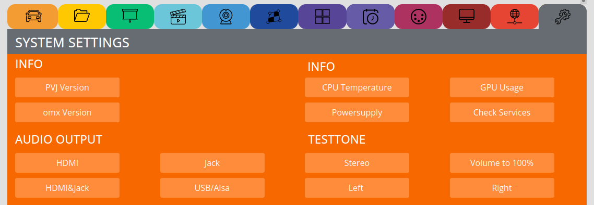
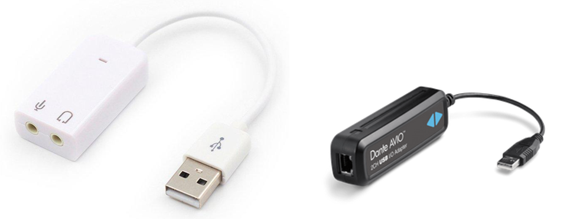
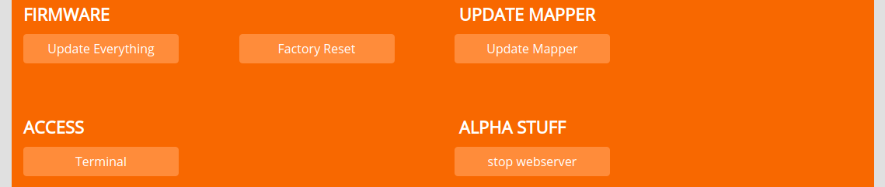

SYSTEM SETTINGS¶
INFO¶
Get some info about the system.
PVJ Version shows you the image version and build date.
omx Version shows you omxplayer version (for fading you need version 2018).
CPU Temperature shows current CPU temperature.
GPU Usage shows GPU usage.
Powersupply checks if the PocketVJ gets enough current or is underpowered.
Check Services shows you which services are enabled and which are disabled.
AUDIO OUTPUT¶
Select where you want the audio to be played. Limit of audio compression is: 160kbit/s (you can experiment with higher values, but then decrease the video bitrate).
Do not use “HDMI&Jack” audio out setting, it will result in bad audio quality, its only there for beeing there….
If the quality from mini Jack plug does not make you happy, use audio over HDMI with an extender or attach an USB soundcard, keep in mind that when they arw big, to provide them power from an external powersource.
FIRMWARE¶
Is for updating stuff:
see video tutorial: https://video.pocketvj.com/AVideo/video/36/pocketvj_rtc_update
if this does not work, use the alternative method:
FACTORY RESET¶
Resets to factory state
ACCESS¶
Access the terminal, used for remote support via chat
ALPHA STUFF¶
Do not touch! except I tell you to do so…